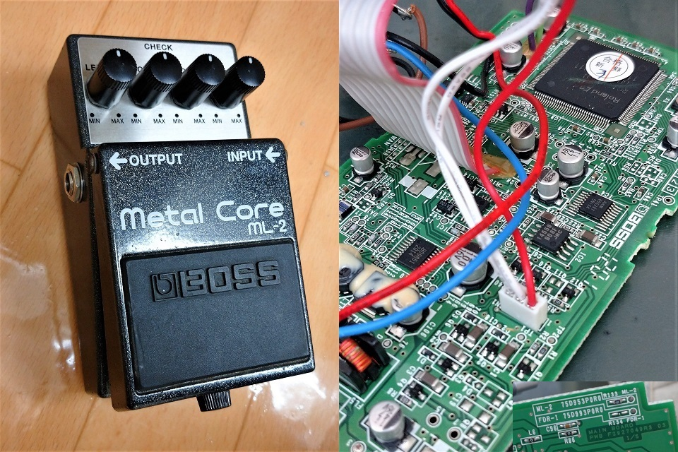
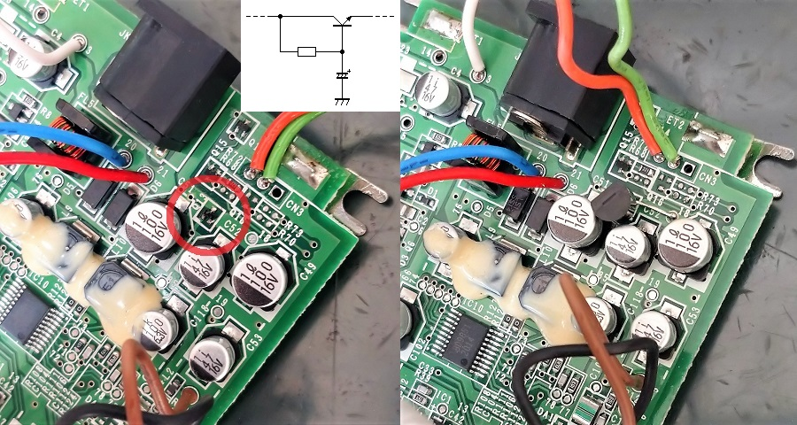
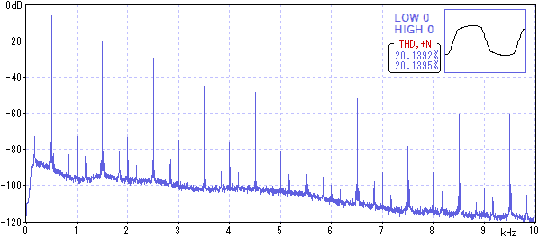
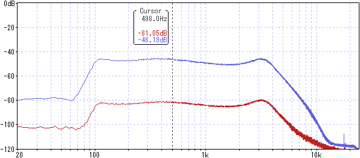
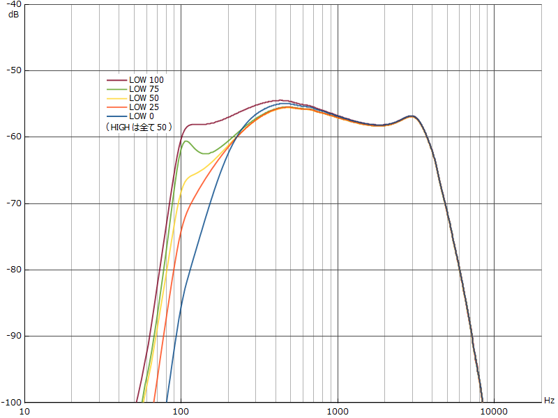
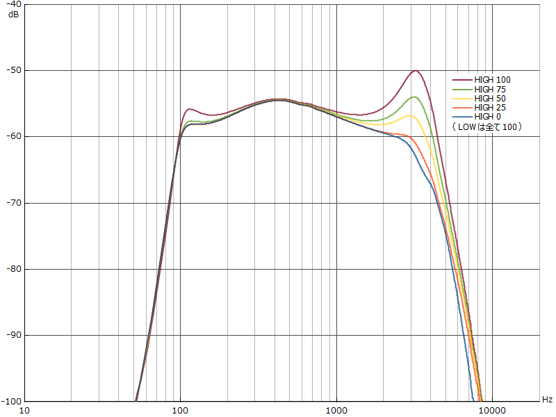
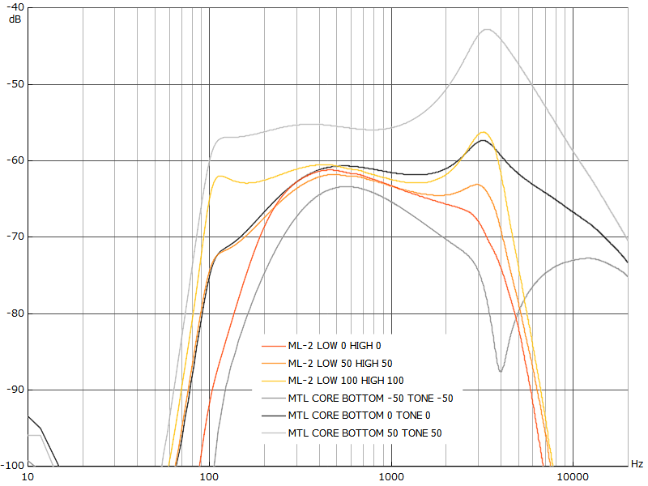

BOSS ML-2 Metal Core 修理・特性測定
2021年11月15日 カテゴリー：修理・改造・解析

音が出ないジャンク状態のBOSS ML-2 Metal Coreを手に入れたので、修理し特性を測定しました。中身はデジタルで、オーディオコーデックAK4552、オペアンプNJM14558、電源用ICのBD9851が見えます。基板裏にはFDR-1の文字があったので、BOSSレジェンド・シリーズのデラックス・リバーブ（販売完了品）でも同じ基板が使われていると思われます。
【修理】
Boss Pedal Serial Decoderで調べると2010年製でした。そこまで古いものではなく、ジャックやポットは問題なさそうです。LEDのオンオフは機能していたので、アナログ部分の故障が予想されます。

電圧を調べていくと、NJM14558の電源ピンが0Vに近く、そこから原因をたどっていきました。すると電源部分のトランジスタが機能していませんでした（上写真赤丸のQ13）。このトランジスタは他のBOSSエフェクターの回路図でも出てくる電圧安定化用だと思われます。手持ちに同じ大きさのトランジスタがなかったので、普通サイズ（TO-92）の2SC1815に交換しました（ビアの穴に足がなんとか入りました）。これで問題なく電圧が出力され、音も無事に出るようになり修理完了です。動作確認後、交換したトランジスタ付近はホットボンドで固めて動かないようにしておきました。
【特性測定】※各ノブの設定は最大を100として記載
▽波形・倍音

デジタルとはいえ内部プログラムでクリッピング処理を行っているはずです。ほとんど奇数次倍音なので、対称クリッピングだと思われます。
▽DIST変化時の周波数特性（LOW 100 HIGH 100）

設定値0～100で約35dB変化します。ゲインを上げたとき少しだけ高音域が下がるようになっているようです。
▽LOW変化時の周波数特性（HIGH 50 DIST 0）

50以下では低域が全体的に下がる感じですが、BOSS公式サイトに音圧感をコントロールという説明があるので、何か特別な処理が行われている可能性があります。50～75では105Hz付近をブーストする動きで、75～100は250Hz付近までを平坦にする動きに変わっています。
▽HIGH変化時の周波数特性（LOW 100 DIST 0）

3.2kHz付近をブーストする動きとなっています。50以上にすると低域も少しブーストするという不思議な動作が追加されており、これがBOSS公式サイトにある「アタックに影響しないきらびやかさ」に関係してくるのかもしれません。
---以下2023年5月20日追記---
▽GT-1000CORE内蔵MTL COREとの比較（DRIVE 0）

MTL COREは高音域が出ており、LOW、HIGHの動きもかなり違っています。